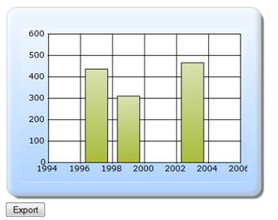

The steps to export a chart through Builder are as follows:
Step 1:
View:
Add the code displayed below in the aspx file.
View[ASPX]
<%--Rendering the Chart COntrol--%>
<div id="Chart">
<% Html.RenderPartial("PartialView", this.ViewData); %></div>
<%using (Ajax.BeginFormExt("Index", new AjaxOptions() { UpdateTargetId = "Chart" }))
{ %>
<input type="submit" value="Export" id="submit""/>
<%} %>
View[cshtml]
@*--Rendering the Chart COntrol--*@
<div id="Chart">
@Html.RenderPartial("PartialView", this.ViewData)
</div>
@using (Ajax.BeginFormExt("Index", new AjaxOptions() { UpdateTargetId = "Chart" }))
{
<input type="submit" value="Export" id="submit""/>
}
Step 2:
Partial View:
Add the code displayed below in the Partial View. The ChartParamsArgs is used to get the parameter values for chart export.
View[ASPX]
<%=Html.Chart("chart_Model")
.Series(series=>{
series.Add().Points(points =>
{
points.Add().X(1997).YValues(new double[] { 437 });
points.Add().X(1999).YValues(new double[] { 311 });
points.Add().X(2003).YValues(new double[] { 466 });
})
.Type(Syncfusion.Windows.Forms.Chart.ChartSeriesType.Column);
})
.Skins(ChartModelSkins.Office2007Blue)
.ChartSeriesSkins(ChartSeriesSkins.WarmCold)
.BorderAppearance(border => border.SkinStyle(Syncfusion.Windows.Forms.Chart.ChartBorderSkinStyle.Emboss))
//Getting the export parameter values from the controller
.ChartParamsArgs((ChartParams)ViewData["ChartParamsData"])
%>
View[cshtml]
@{ Html.Chart("chart_Model")
.Series(series=>{
series.Add().Points(points =>
{
points.Add().X(1997).YValues(new double[] { 437 });
points.Add().X(1999).YValues(new double[] { 311 });
points.Add().X(2003).YValues(new double[] { 466 });
})
.Type(Syncfusion.Windows.Forms.Chart.ChartSeriesType.Column);
})
.Skins(ChartModelSkins.Office2007Blue)
.ChartSeriesSkins(ChartSeriesSkins.WarmCold)
.BorderAppearance(border => border.SkinStyle(Syncfusion.Windows.Forms.Chart.ChartBorderSkinStyle.Emboss))
//Getting the export parameter values from the controller
.ChartParamsArgs((ChartParams)ViewData["ChartParamsData"])
.Render();
}
Step 3:
Controller:
Add the code displayed below in the Controller. By using the ExportType property, you can specify the export type of the chart. By using the FileName, you can set the filename to be exported and you have to set the ChartAction property to Export. To check whether the function call is ajax or not, IsAjaxCall is used.
public ActionResult Index()
{
ChartParams ChartParamsData = new ChartParams();
ChartParamsData.ExportType = "Bmp";
ChartParamsData.FileName = "Chart";
ChartParamsData.ChartAction = ChartHtmlAction.Export;
ViewData["ChartParamsData"] = ChartParamsData;
if (IsAjaxCall())
return PartialView("PartialView", this.ViewData);
else
return View();
}
protected bool IsAjaxCall()
{
return ControllerContext.HttpContext.Request.Headers["X-Requested-With"] == "XMLHttpRequest";
}
Step 4:
Run the code, to get the following output:

Figure 344: Before Export
Step 5:
Click Export and then the chart will be exported to the server map path location. You will get the following output.
Figure 345: After Export